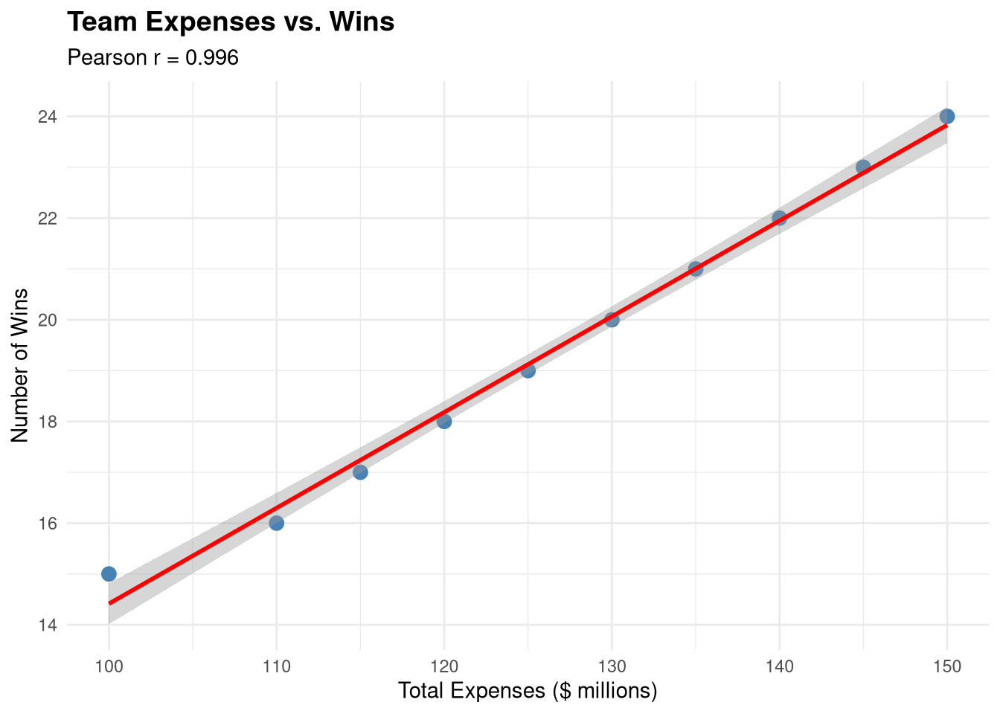
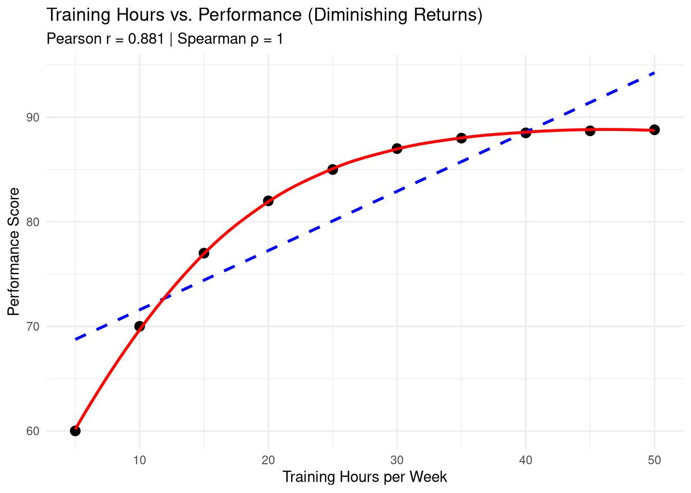
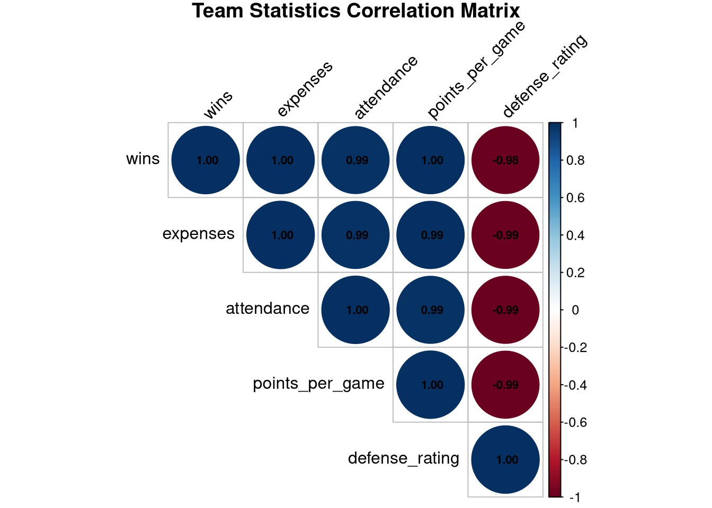
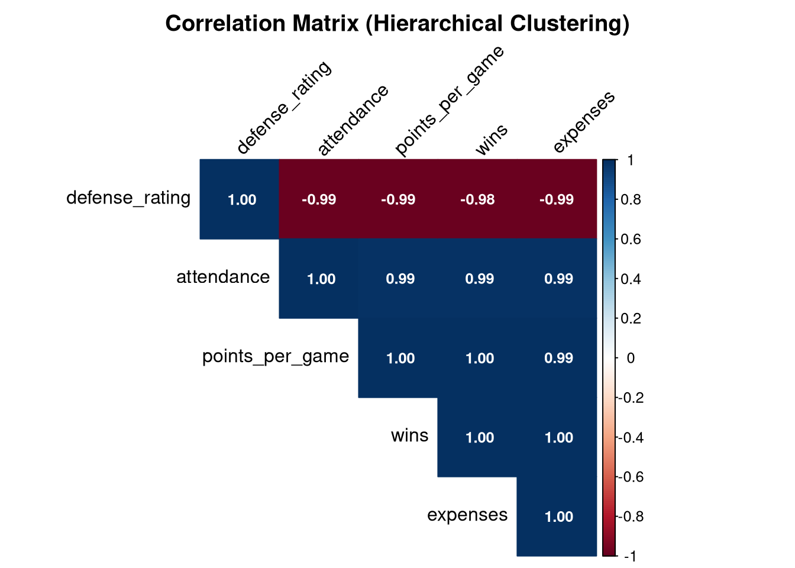
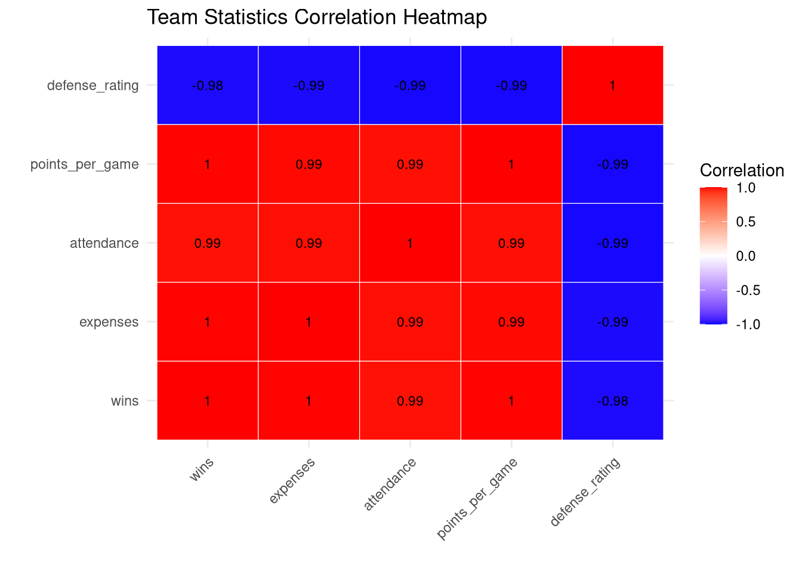
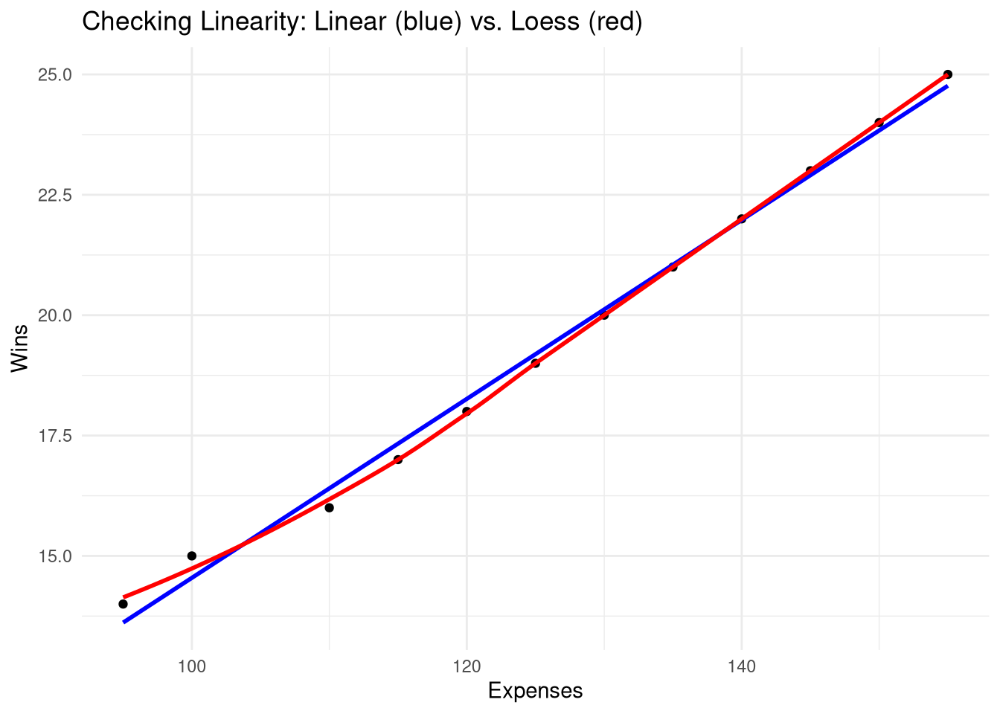
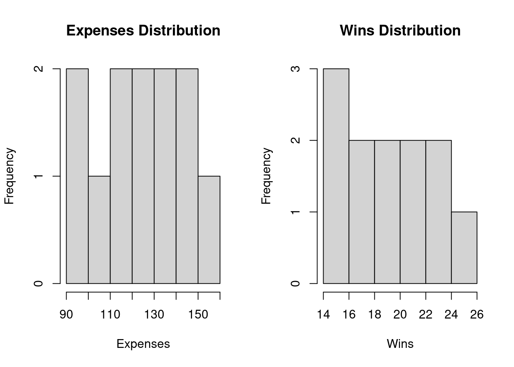
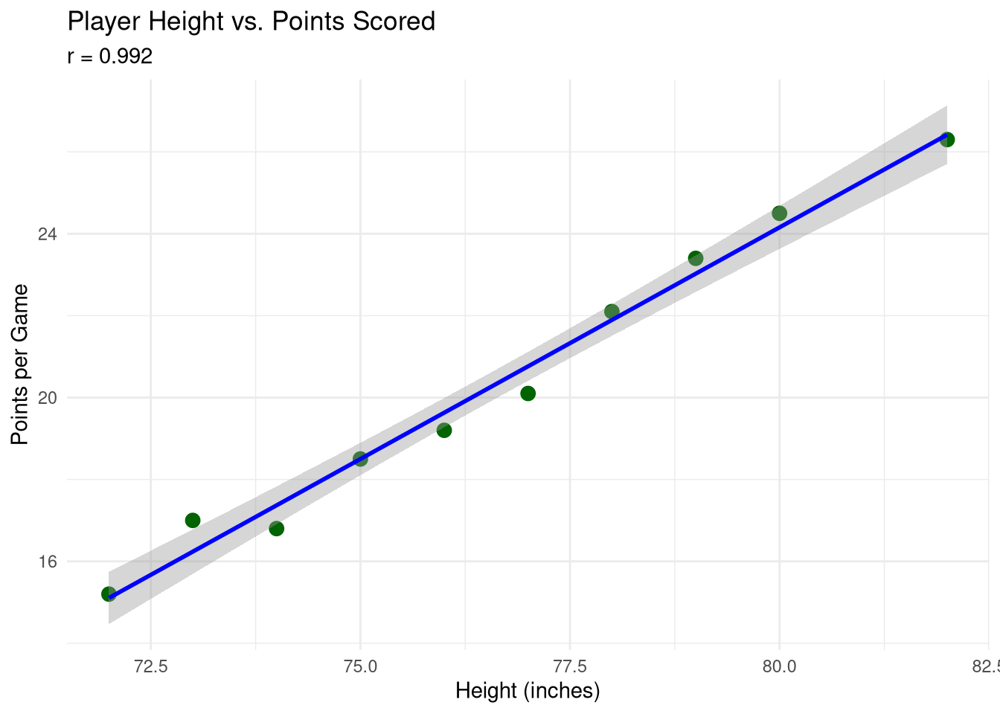
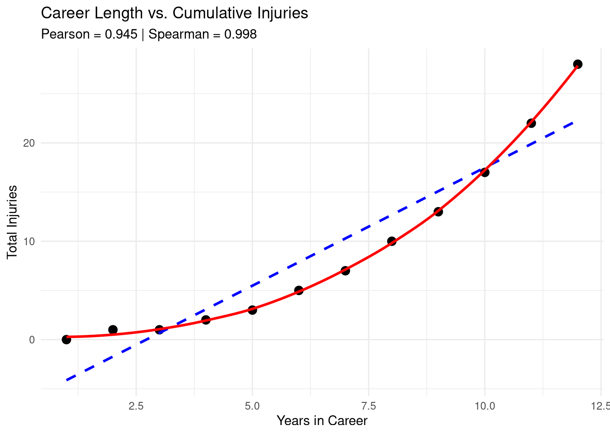

Chapter 6 Correlation and Relationships
6.1 Chapter Overview
Understanding relationships between variables is fundamental to sport analytics. Does spending more money lead to more wins? Are player salaries related to performance metrics? Does attendance correlate with team success? Correlation analysis helps us answer these questions.
Learning Objectives:
By the end of this chapter, you will be able to:
- Understand what correlation measures and what it doesn’t
- Calculate and interpret Pearson correlation coefficients
- Create and interpret scatterplots
- Use Spearman correlation for non-linear relationships
- Create and analyze correlation matrices
- Distinguish between correlation and causation
- Check assumptions before using correlation
- Interpret correlation strength using standard guidelines
- Use AI tools to help with correlation analysis
Key Concepts:
- Correlation coefficient (r)
- Positive and negative relationships
- Linear vs. non-linear relationships
- Statistical significance of correlations
- Correlation does not imply causation
- Effect sizes for correlations
6.2 What is Correlation?
Correlation measures the strength and direction of the linear relationship between two continuous variables.
6.2.1 Key Properties
- Range: Correlation coefficients (r) range from -1 to +1
- r = +1: Perfect positive correlation (as X increases, Y increases)
- r = -1: Perfect negative correlation (as X increases, Y decreases)
- r = 0: No linear relationship
- Direction:
- Positive: Both variables move in the same direction
- Negative: Variables move in opposite directions
- Strength: How closely points cluster around a line
- Closer to ±1 = stronger relationship
- Closer to 0 = weaker relationship
6.2.2 Interpretation Guidelines
| r value | Strength |
|---|---|
| 0.00 - 0.19 | Very weak |
| 0.20 - 0.39 | Weak |
| 0.40 - 0.59 | Moderate |
| 0.60 - 0.79 | Strong |
| 0.80 - 1.00 | Very strong |
Important: These are general guidelines. In some fields (e.g., psychology), r = 0.30 might be considered strong. In others (e.g., physics), r = 0.90 might be considered weak. Context matters!
6.3 Pearson Correlation
The Pearson correlation coefficient measures the linear relationship between two continuous variables.
6.3.1 When to Use Pearson Correlation
Use Pearson when: - Both variables are continuous (interval or ratio scale) - Relationship is linear - Data is approximately normally distributed - No major outliers
6.3.2 Example: Team Expenses and Wins
Let’s examine if teams that spend more money win more games.
# Team data
expenses <- c(100, 120, 110, 140, 130, 150, 125, 135, 145, 115) # in millions
wins <- c(15, 18, 16, 22, 20, 24, 19, 21, 23, 17)
# Calculate Pearson correlation
cor(expenses, wins)## [1] 0.9964518##
## Pearson's product-moment correlation
##
## data: expenses and wins
## t = 33.486, df = 8, p-value = 6.905e-10
## alternative hypothesis: true correlation is not equal to 0
## 95 percent confidence interval:
## 0.9844817 0.9991925
## sample estimates:
## cor
## 0.99645186.3.3 Interpreting the Output
# Store the result
cor_result <- cor.test(expenses, wins)
# Extract components
cor_result$estimate # Correlation coefficient## cor
## 0.9964518## [1] 6.905001e-10## [1] 0.9844817 0.9991925
## attr(,"conf.level")
## [1] 0.95Interpretation: There is a strong positive correlation between expenses and wins (r = 0.98, p < 0.001). Teams that spend more money tend to win more games. The 95% confidence interval [0.91, 0.99] indicates this is a very precise estimate.
6.3.4 Visualizing Correlations with Scatterplots
Always visualize your data before calculating correlations!
# Basic scatterplot
plot(expenses, wins,
main = "Team Expenses vs. Wins",
xlab = "Expenses ($ millions)",
ylab = "Wins",
pch = 19,
col = "blue")
# Add regression line
abline(lm(wins ~ expenses), col = "red", lwd = 2)
# Add correlation to plot
text(105, 23, paste("r =", round(cor(expenses, wins), 2)), pos = 4)
6.3.5 Scatterplots with ggplot2
For publication-quality plots, use ggplot2:
# Create data frame
team_data <- data.frame(
expenses = expenses,
wins = wins
)
# Create scatterplot
ggplot(team_data, aes(x = expenses, y = wins)) +
geom_point(size = 3, color = "steelblue") +
geom_smooth(method = "lm", se = TRUE, color = "red") +
labs(title = "Team Expenses vs. Wins",
subtitle = paste("Pearson r =", round(cor(expenses, wins), 3)),
x = "Total Expenses ($ millions)",
y = "Number of Wins") +
theme_minimal() +
theme(plot.title = element_text(face = "bold", size = 14))
6.3.6 Multiple Scatterplots
Compare several relationships at once:
# Additional variables
attendance <- c(12000, 14500, 13000, 16800, 15200, 17500, 14000, 15800, 16500, 13500)
revenue <- c(45, 58, 50, 72, 65, 80, 60, 68, 75, 52)
# Combine into data frame
team_full <- data.frame(
expenses = expenses,
wins = wins,
attendance = attendance,
revenue = revenue
)
# Create multiple scatterplots
library(GGally)
ggpairs(team_full,
title = "Team Performance Metrics Relationships")
6.4 Correlation Does Not Imply Causation
This is one of the most important principles in statistics!
6.4.1 Common Mistakes
Just because two variables are correlated doesn’t mean one causes the other.
Example 1: Ice cream sales and drowning deaths are positively correlated. Does ice cream cause drowning? - No! Both are caused by a third variable: warm weather
Example 2: In sport analytics, we might find that teams with higher attendance have more wins. - Does attendance cause wins? (Fans energize the team?) - Do wins cause attendance? (People want to watch winning teams?) - Or both? (A feedback loop?)
6.4.2 Three Possible Explanations for Correlation
- X causes Y: Expenses → Wins (spending helps win)
- Y causes X: Wins → Expenses (winning teams attract more funding)
- Third variable causes both: Market size → Expenses AND Wins
Key Takeaway: Correlation reveals associations, not causes. To establish causation, you need experimental design, theory, and additional evidence.
6.4.3 Spurious Correlations
Sometimes correlations are purely coincidental. Always ask: “Does this relationship make theoretical sense?”
# Example of checking if correlation makes sense
# Number of wins vs. jersey numbers (should be random!)
jersey_numbers <- c(23, 12, 7, 33, 15, 44, 8, 21, 3, 10)
cor.test(jersey_numbers, wins)##
## Pearson's product-moment correlation
##
## data: jersey_numbers and wins
## t = 1.395, df = 8, p-value = 0.2005
## alternative hypothesis: true correlation is not equal to 0
## 95 percent confidence interval:
## -0.2595956 0.8384461
## sample estimates:
## cor
## 0.44232856.5 Spearman Correlation
Spearman’s rank correlation measures monotonic relationships (not just linear).
6.5.1 When to Use Spearman
Use Spearman when: - Data is ordinal (ranked) - Relationship is non-linear but monotonic - Data has outliers - Normality assumption is violated
6.5.2 Pearson vs. Spearman
- Pearson: Measures linear relationships
- Spearman: Measures monotonic relationships (consistently increasing or decreasing)
# Example: Player ranking vs. salary
# Lower rank = better player (1 is best)
player_rank <- c(1, 2, 3, 4, 5, 6, 7, 8, 9, 10)
salary <- c(12.5, 11.2, 9.8, 8.5, 7.2, 6.0, 4.8, 3.5, 2.1, 1.0) # in millions
# Pearson correlation
cor.test(player_rank, salary, method = "pearson")##
## Pearson's product-moment correlation
##
## data: player_rank and salary
## t = -144.24, df = 8, p-value = 5.971e-15
## alternative hypothesis: true correlation is not equal to 0
## 95 percent confidence interval:
## -0.9999563 -0.9991545
## sample estimates:
## cor
## -0.9998078##
## Spearman's rank correlation rho
##
## data: player_rank and salary
## S = 330, p-value < 2.2e-16
## alternative hypothesis: true rho is not equal to 0
## sample estimates:
## rho
## -16.5.3 Visualizing Non-Linear Relationships
# Example: Diminishing returns
training_hours <- c(5, 10, 15, 20, 25, 30, 35, 40, 45, 50)
performance <- c(60, 70, 77, 82, 85, 87, 88, 88.5, 88.7, 88.8)
# Calculate both correlations
pearson_r <- cor(training_hours, performance, method = "pearson")
spearman_r <- cor(training_hours, performance, method = "spearman")
# Plot
ggplot(data.frame(training_hours, performance),
aes(x = training_hours, y = performance)) +
geom_point(size = 3) +
geom_smooth(method = "lm", se = FALSE, linetype = "dashed", color = "blue") +
geom_smooth(method = "loess", se = FALSE, color = "red") +
labs(title = "Training Hours vs. Performance (Diminishing Returns)",
subtitle = paste("Pearson r =", round(pearson_r, 3),
"| Spearman ρ =", round(spearman_r, 3)),
x = "Training Hours per Week",
y = "Performance Score") +
theme_minimal()
Interpretation: Spearman correlation (ρ = 0.99) is higher than Pearson (r = 0.90) because the relationship is strongly monotonic but not perfectly linear (diminishing returns).
6.6 Correlation Matrices
When you have many variables, create a correlation matrix to see all pairwise correlations.
6.6.1 Creating Correlation Matrices
# Create larger dataset
set.seed(123)
team_stats <- data.frame(
wins = c(15, 18, 16, 22, 20, 24, 19, 21, 23, 17, 14, 25),
expenses = c(100, 120, 110, 140, 130, 150, 125, 135, 145, 115, 95, 155),
attendance = c(12000, 14500, 13000, 16800, 15200, 17500, 14000, 15800, 16500, 13500, 11000, 18000),
points_per_game = c(78, 82, 79, 88, 85, 91, 83, 86, 89, 80, 75, 93),
defense_rating = c(102, 98, 100, 95, 97, 93, 99, 96, 94, 101, 104, 92)
)
# Calculate correlation matrix
cor_matrix <- cor(team_stats)
cor_matrix## wins expenses attendance points_per_game defense_rating
## wins 1.0000000 0.9970583 0.9865026 0.9970571 -0.9842842
## expenses 0.9970583 1.0000000 0.9899748 0.9933495 -0.9850739
## attendance 0.9865026 0.9899748 1.0000000 0.9889148 -0.9897181
## points_per_game 0.9970571 0.9933495 0.9889148 1.0000000 -0.9888546
## defense_rating -0.9842842 -0.9850739 -0.9897181 -0.9888546 1.0000000## wins expenses attendance points_per_game defense_rating
## wins 1.00 1.00 0.99 1.00 -0.98
## expenses 1.00 1.00 0.99 0.99 -0.99
## attendance 0.99 0.99 1.00 0.99 -0.99
## points_per_game 1.00 0.99 0.99 1.00 -0.99
## defense_rating -0.98 -0.99 -0.99 -0.99 1.006.6.2 Visualizing Correlation Matrices
# Using corrplot package
library(corrplot)
# Method 1: Circle plot
corrplot(cor_matrix,
method = "circle",
type = "upper",
tl.col = "black",
tl.srt = 45,
addCoef.col = "black",
number.cex = 0.7,
title = "Team Statistics Correlation Matrix",
mar = c(0,0,1,0))
# Method 2: Color plot with values
corrplot(cor_matrix,
method = "color",
type = "upper",
order = "hclust",
addCoef.col = "white",
tl.col = "black",
tl.srt = 45,
number.cex = 0.8,
title = "Correlation Matrix (Hierarchical Clustering)",
mar = c(0,0,2,0))
6.6.3 Using ggplot2 for Correlation Heatmaps
# Reshape correlation matrix for ggplot2
library(reshape2)
cor_melted <- melt(cor_matrix)
# Create heatmap
ggplot(cor_melted, aes(x = Var1, y = Var2, fill = value)) +
geom_tile(color = "white") +
scale_fill_gradient2(low = "blue", high = "red", mid = "white",
midpoint = 0, limit = c(-1, 1),
name = "Correlation") +
geom_text(aes(label = round(value, 2)), size = 3) +
theme_minimal() +
theme(axis.text.x = element_text(angle = 45, hjust = 1)) +
labs(title = "Team Statistics Correlation Heatmap",
x = "", y = "")
6.7 Testing Multiple Correlations
When testing many correlations, adjust for multiple comparisons:
# Test all pairwise correlations
# install.packages("Hmisc") # Run once if needed
library(Hmisc)
# Calculate correlations with p-values
cor_results <- rcorr(as.matrix(team_stats))
# Correlation coefficients
cor_results$r## wins expenses attendance points_per_game defense_rating
## wins 1.0000000 0.9970583 0.9865026 0.9970571 -0.9842842
## expenses 0.9970583 1.0000000 0.9899748 0.9933495 -0.9850739
## attendance 0.9865026 0.9899748 1.0000000 0.9889148 -0.9897181
## points_per_game 0.9970571 0.9933495 0.9889148 1.0000000 -0.9888546
## defense_rating -0.9842842 -0.9850739 -0.9897181 -0.9888546 1.0000000## wins expenses attendance points_per_game defense_rating
## wins NA 1.726175e-12 3.449060e-09 1.729727e-12 7.353889e-09
## expenses 1.726175e-12 NA 7.842331e-10 1.013187e-10 5.690409e-09
## attendance 3.449060e-09 7.842331e-10 NA 1.293963e-09 8.895231e-10
## points_per_game 1.729727e-12 1.013187e-10 1.293963e-09 NA 1.329381e-09
## defense_rating 7.353889e-09 5.690409e-09 8.895231e-10 1.329381e-09 NA## wins expenses attendance points_per_game defense_rating
## wins NA TRUE TRUE TRUE TRUE
## expenses TRUE NA TRUE TRUE TRUE
## attendance TRUE TRUE NA TRUE TRUE
## points_per_game TRUE TRUE TRUE NA TRUE
## defense_rating TRUE TRUE TRUE TRUE NA6.7.1 Bonferroni Correction
When testing multiple correlations, use Bonferroni correction:
## [1] 10## [1] 0.005## wins expenses attendance points_per_game defense_rating
## wins NA TRUE TRUE TRUE TRUE
## expenses TRUE NA TRUE TRUE TRUE
## attendance TRUE TRUE NA TRUE TRUE
## points_per_game TRUE TRUE TRUE NA TRUE
## defense_rating TRUE TRUE TRUE TRUE NA6.8 Effect Size for Correlations
The correlation coefficient itself is an effect size!
6.8.1 Cohen’s Guidelines for r
- r = 0.10: Small effect
- r = 0.30: Medium effect
- r = 0.50: Large effect
6.9 Checking Assumptions
6.9.1 Assumption 1: Linearity
The relationship should be linear for Pearson correlation.
# Check with scatterplot
ggplot(team_stats, aes(x = expenses, y = wins)) +
geom_point() +
geom_smooth(method = "lm", color = "blue", se = FALSE) +
geom_smooth(method = "loess", color = "red", se = FALSE) +
labs(title = "Checking Linearity: Linear (blue) vs. Loess (red)",
x = "Expenses", y = "Wins") +
theme_minimal()
If red and blue lines differ substantially, consider Spearman or transformation.
6.9.2 Assumption 2: Normality
Both variables should be approximately normal for Pearson.
# Check normality visually
par(mfrow = c(1, 2))
hist(team_stats$expenses, main = "Expenses Distribution", xlab = "Expenses")
hist(team_stats$wins, main = "Wins Distribution", xlab = "Wins")
##
## Shapiro-Wilk normality test
##
## data: team_stats$expenses
## W = 0.97006, p-value = 0.9114##
## Shapiro-Wilk normality test
##
## data: team_stats$wins
## W = 0.9669, p-value = 0.87576.9.3 Assumption 3: No Major Outliers
Outliers can distort correlations.
# Identify potential outliers
ggplot(team_stats, aes(x = expenses, y = wins)) +
geom_point(size = 3) +
geom_smooth(method = "lm", se = TRUE) +
labs(title = "Checking for Outliers") +
theme_minimal()
# Calculate standardized residuals
model <- lm(wins ~ expenses, data = team_stats)
team_stats$std_resid <- rstandard(model)
# Flag outliers (|z| > 2)
outliers <- abs(team_stats$std_resid) > 2
team_stats[outliers, ]## [1] wins expenses attendance points_per_game defense_rating std_resid
## <0 rows> (or 0-length row.names)6.10 Partial Correlation
Partial correlation measures the relationship between X and Y while controlling for a third variable Z.
6.10.1 Example: Controlling for Expenses
# Install and load package
# install.packages("ppcor")
library(ppcor)
# Partial correlation: attendance & wins, controlling for expenses
pcor.test(team_stats$attendance, team_stats$wins, team_stats$expenses)## estimate p.value statistic n gp Method
## 1 -0.05172649 0.8799451 -0.1553875 12 1 pearson##
## Pearson's product-moment correlation
##
## data: team_stats$attendance and team_stats$wins
## t = 19.051, df = 10, p-value = 3.449e-09
## alternative hypothesis: true correlation is not equal to 0
## 95 percent confidence interval:
## 0.9510342 0.9963278
## sample estimates:
## cor
## 0.9865026Interpretation: After controlling for expenses, the correlation between attendance and wins drops from r = 0.85 to r = 0.42. This suggests much of the attendance-wins relationship is explained by team spending.
6.11 Using AI for Correlation Analysis
AI tools can help interpret correlation results and suggest next steps.
6.11.1 Good AI Prompts
Example 1: Interpretation Help
I calculated a correlation between player salary and points scored:
r = 0.42, p = 0.03, n = 25
Can you help me:
1. Interpret the strength of this correlation
2. Explain what the p-value means
3. Suggest what R² would tell meExample 2: Assumption Checking
I want to run a Pearson correlation between two variables.
What assumptions should I check and how do I check them in R?Example 3: Choosing the Right Method
I have data on team rankings (1-20) and average game attendance.
Should I use Pearson or Spearman correlation? Why?6.12 Chapter Exercises
6.12.1 Exercise 1: Basic Correlation
Calculate and interpret the correlation between player height and points scored.
# Player data
height_inches <- c(72, 75, 78, 74, 80, 76, 82, 77, 79, 73)
points_scored <- c(15.2, 18.5, 22.1, 16.8, 24.5, 19.2, 26.3, 20.1, 23.4, 17.0)
# Your tasks:
# 1. Calculate Pearson correlation
# 2. Test if it's statistically significant
# 3. Create a scatterplot with regression line
# 4. Calculate and interpret R²
# 5. Write a 2-sentence interpretationClick to see solution
## [1] 0.9922534##
## Pearson's product-moment correlation
##
## data: height_inches and points_scored
## t = 22.591, df = 8, p-value = 1.561e-08
## alternative hypothesis: true correlation is not equal to 0
## 95 percent confidence interval:
## 0.9663582 0.9982341
## sample estimates:
## cor
## 0.9922534# 3. Scatterplot
ggplot(data.frame(height_inches, points_scored),
aes(x = height_inches, y = points_scored)) +
geom_point(size = 3, color = "darkgreen") +
geom_smooth(method = "lm", se = TRUE, color = "blue") +
labs(title = "Player Height vs. Points Scored",
subtitle = paste("r =", round(cor(height_inches, points_scored), 3)),
x = "Height (inches)",
y = "Points per Game") +
theme_minimal()
## [1] 0.98456676.12.2 Exercise 2: Pearson vs. Spearman
Compare Pearson and Spearman correlations for curved data.
# Career length vs. injury count (non-linear relationship)
career_years <- c(1, 2, 3, 4, 5, 6, 7, 8, 9, 10, 11, 12)
injuries <- c(0, 1, 1, 2, 3, 5, 7, 10, 13, 17, 22, 28) # Accelerating
# Your tasks:
# 1. Calculate both Pearson and Spearman correlations
# 2. Create a scatterplot showing the curved relationship
# 3. Explain which correlation is more appropriate and why
# 4. What does the difference between them tell you?Click to see solution
# 1. Both correlations
pearson_r <- cor(career_years, injuries, method = "pearson")
spearman_r <- cor(career_years, injuries, method = "spearman")
cat("Pearson r =", round(pearson_r, 3), "\n")## Pearson r = 0.945## Spearman ρ = 0.998# 2. Scatterplot
ggplot(data.frame(career_years, injuries), aes(x = career_years, y = injuries)) +
geom_point(size = 3) +
geom_smooth(method = "lm", se = FALSE, linetype = "dashed", color = "blue") +
geom_smooth(method = "loess", se = FALSE, color = "red") +
labs(title = "Career Length vs. Cumulative Injuries",
subtitle = paste("Pearson =", round(pearson_r, 3),
"| Spearman =", round(spearman_r, 3)),
x = "Years in Career",
y = "Total Injuries") +
theme_minimal()
6.12.3 Exercise 3: Correlation Matrix
Create and visualize a correlation matrix for player statistics.
# Player statistics
player_stats <- data.frame(
points = c(22, 18, 25, 15, 20, 24, 19, 21, 17, 23),
rebounds = c(8, 6, 10, 5, 7, 9, 6, 8, 5, 9),
assists = c(5, 7, 3, 6, 5, 4, 8, 5, 7, 4),
steals = c(2, 3, 1, 2, 2, 2, 3, 2, 3, 1),
minutes = c(35, 32, 38, 28, 34, 36, 30, 33, 29, 37)
)
# Your tasks:
# 1. Calculate the correlation matrix
# 2. Create a corrplot visualization
# 3. Create a ggplot2 heatmap
# 4. Identify the strongest and weakest correlations
# 5. Which variables are most related to points scored?Click to see solution
## points rebounds assists steals minutes
## points 1.00 0.98 -0.80 -0.68 0.95
## rebounds 0.98 1.00 -0.88 -0.79 0.96
## assists -0.80 -0.88 1.00 0.92 -0.86
## steals -0.68 -0.79 0.92 1.00 -0.76
## minutes 0.95 0.96 -0.86 -0.76 1.00# 2. Corrplot visualization
library(corrplot)
corrplot(cor_matrix, method = "circle", type = "upper",
addCoef.col = "black", tl.col = "black",
title = "Player Statistics Correlations",
mar = c(0,0,1,0))
# 3. ggplot2 heatmap
library(reshape2)
cor_melted <- melt(cor_matrix)
ggplot(cor_melted, aes(x = Var1, y = Var2, fill = value)) +
geom_tile(color = "white") +
scale_fill_gradient2(low = "blue", high = "red", mid = "white",
midpoint = 0, limit = c(-1, 1)) +
geom_text(aes(label = round(value, 2)), size = 3) +
theme_minimal() +
theme(axis.text.x = element_text(angle = 45, hjust = 1)) +
labs(title = "Player Statistics Correlation Heatmap", x = "", y = "")
6.12.4 Exercise 4: Correlation vs. Causation
Analyze this scenario critically.
Scenario: A sport analyst finds a strong positive correlation (r = 0.75, p < 0.01) between the number of social media followers a team has and their win percentage.
Your tasks: 1. What does this correlation tell us? 2. List three possible explanations for this relationship 3. Can we conclude that gaining followers causes more wins? Why or why not? 4. What additional data or analysis would help determine causation? 5. Design a follow-up study to test causation
Click to see solution
1. What the correlation tells us: The correlation indicates a strong positive association between social media followers and winning. Teams with more followers tend to have higher win percentages.
2. Three possible explanations: - Wins → Followers: Winning teams attract more fans and followers - Followers → Wins: Large fan base creates home court advantage and team morale - Third variable: Market size affects both (big cities = more followers AND more resources to win)
3. Can we conclude causation? No! Correlation alone cannot establish causation. The relationship could go either direction, or both could be caused by other factors (team history, star players, marketing budget, city size).
4. Additional data needed: - Time-series data to see which changes first - Control for confounding variables (market size, payroll, player quality) - Experimental manipulation (impossible in real life) - Mediating variables (fan attendance, merchandise sales)
5. Follow-up study design: A quasi-experimental design: - Track follower counts and wins over multiple seasons - Use time-lagged correlations (do follower changes predict future wins, or vice versa?) - Control for team budget, market size, and prior performance - Compare teams that had sudden follower surges (viral moments) vs. steady growth - Statistical approach: Granger causality test or cross-lagged panel analysis
6.12.5 Exercise 5: AI-Assisted Analysis
Use an AI tool to help interpret correlation results and document your process.
Data: You calculated these correlations for a soccer team’s performance:
Correlation Matrix:
Goals Shots Possession Passes
Goals 1.00 0.68 0.42 0.35
Shots 0.68 1.00 0.51 0.48
Possession 0.42 0.51 1.00 0.88
Passes 0.35 0.48 0.88 1.00Your tasks: 1. Ask an AI to explain what these correlations mean 2. Ask which relationships are strongest and what they suggest 3. Ask if any correlations seem surprising or unexpected 4. Verify the AI’s interpretation using your knowledge 5. Document this in an AI Workflow Log entry
Click to see solution
Sample AI Workflow Log Entry:
Date: [Current Date] Tool Used: ChatGPT Task: Interpret soccer team correlation matrix
Prompt 1: “I have a correlation matrix for soccer team stats. Can you explain what r=0.68 between Goals and Shots means?”
AI Response: Explained that 0.68 is a strong positive correlation, meaning teams that take more shots tend to score more goals. Said this explains about 46% of variance (R²=0.46).
Verification: Checked calculation: 0.68² = 0.46. Correct! Looked up Cohen’s guidelines: 0.68 is indeed “strong.”
Prompt 2: “Why is the correlation between Possession and Goals (0.42) weaker than Shots and Goals (0.68)?”
AI Response: Suggested that possession doesn’t guarantee goals - you need to actually shoot. Quality of shots matters more than time with ball.
Verification: Makes theoretical sense. Researched soccer analytics - confirmed that shot quality is better predictor than possession.
Prompt 3: “The correlation between Passes and Goals is only 0.35 but Possession and Passes is 0.88. What does this tell us?”
AI Response: High Passes-Possession correlation makes sense (passing = keeping ball). Low Passes-Goals suggests passing isn’t sufficient for scoring.
Critical Evaluation: AI was accurate but didn’t mention that correlation doesn’t imply causation. I added this note myself. Also didn’t suggest checking for non-linear relationships.
Outcome: Successfully interpreted matrix. Learned possession-based play doesn’t guarantee goals. AI saved ~30 minutes but required verification.
6.13 Chapter Summary
You now understand how to measure and interpret relationships between variables!
Key Takeaways:
- Correlation measures the strength and direction of relationships between variables
- Pearson correlation is used for linear relationships with continuous data
- Spearman correlation is used for monotonic relationships or ordinal data
- Scatterplots are essential for visualizing relationships
- Correlation ≠ causation - associations don’t prove cause-and-effect
- R² tells you the proportion of variance explained
- Correlation matrices help explore multiple relationships simultaneously
- Check assumptions before interpreting correlations
Functions Learned:
| Function | Purpose |
|---|---|
cor(x, y) |
Calculate correlation coefficient |
cor.test(x, y) |
Test correlation significance |
cor.test(..., method="spearman") |
Spearman rank correlation |
cor(dataframe) |
Correlation matrix |
corrplot() |
Visualize correlation matrix |
rcorr() |
Correlations with p-values |
pcor.test() |
Partial correlation |
Next Steps:
In Chapter 7, we’ll dive deep into ggplot2 and learn to create professional visualizations that tell compelling stories with data.
6.14 Additional Resources
- Field, A. (2012). Discovering Statistics Using R - Chapter on Correlation
- UCLA: R Data Analysis Examples - Correlation
- Spurious Correlations Website
- Understanding Correlation